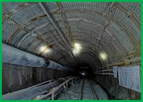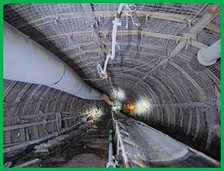
(a)岩巷
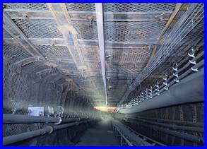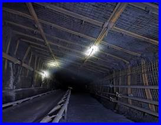
(b)煤巷
图1 巷道围岩协同锚固效果（恒鼎，大西南）
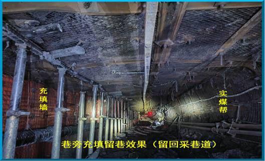
(a) 近水平煤层留回采巷道效果（黔鑫煤矿）
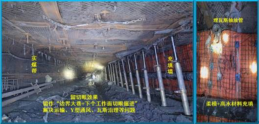
(b) 近水平煤层留切眼效果（黔鑫煤矿）
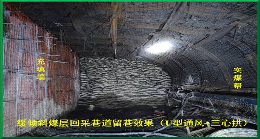
(c) 缓倾斜煤层留回采巷道效果（恒鼎，22-24°）
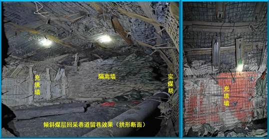
(d) 倾斜煤层留回采巷道效果（恒鼎，36-38°）
图2 无巷旁充填沿空留巷效果图
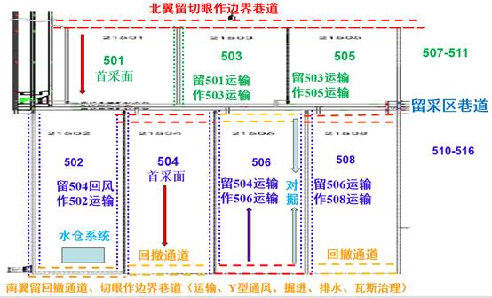
图3 黔鑫煤矿多方式留巷示意图
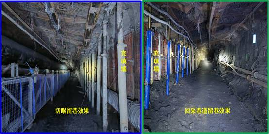
图4 黔鑫煤矿多方式留巷效果图
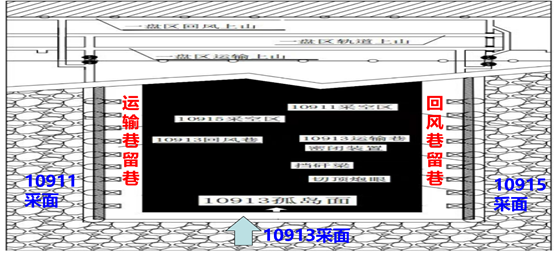
(a) 孤岛工作面“零巷道掘进”双留巷开采设计示意图
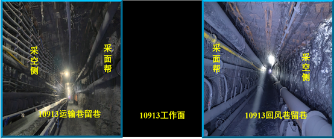
(b) 孤岛工作面“零巷道掘进”双留巷开采现场示意图
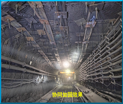 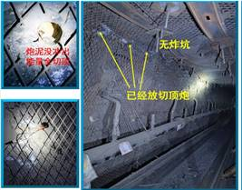
(c) 巷道协同加固效果 (d) 定向爆破切顶效果
图5 孤岛工作面“零巷道掘进”双留巷开采效果图
(更新于2024年8月1日)